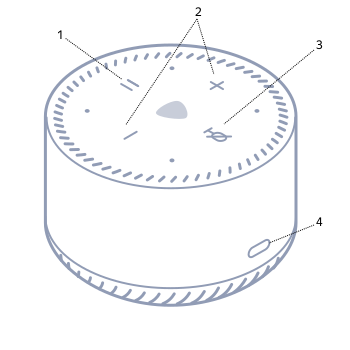
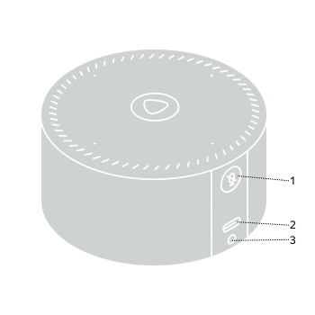

Своя Станция.
По шагам.
Откроем полный доступ к системе колонки: подготовим компьютер, подключим Станцию и проверим результат.
Основной маршрут для Лайт 1 и Мини 1. Можно пройти вручную. Помощь AI по желанию.
Выбрать свою колонкуК ролику «Станция из-за одной цифры» · 27 октября 2026
Адрес найдём в шаге 4Адрес найдём в шаге 6Нужны компьютер, свой роутер с доступом к настройкам и телефон с «Домом с Алисой». Сброс удалит настройки колонки. Во время записи прошивки питание должно оставаться включённым.
Что у вас за устройства?
Начнём с модели колонки и системы компьютера. Остальные данные найдём по ходу.
Выберите модель и систему. Ниже останутся подходящие инструкции.
Прежде чем использовать прошивку, сверьте точную модель и условия в её инструкции.
Не знаю модель или систему
Модель: в «Доме с Алисой» откройте колонку и её настройки. Посмотрите точное название; при необходимости сверьте наклейку на устройстве с официальной справкой. Лайт 1 и Лайт 2 требуют разных способов.
Система: у Mac есть меню Apple в левом верхнем углу. В Windows меню «Пуск»; точную версию покажет команда winver в окне Win + R. Для другой Linux-системы нужны её собственные команды установки программ.
Подготовьте компьютер
Понадобится окно, в которое можно вставлять команды. Оно называется терминалом.
- Скачайте lite-kit и распакуйте архив. Внутри должны быть папки
scripts,firmwareи файлы запуска. - Откройте терминал и перейдите в эту папку. Выберите подсказку для своей системы ниже.
Windows: открыть окно и установить инструменты
Открыть окно: нажмите «Пуск», введите PowerShell, нажмите на найденной программе правой кнопкой и выберите «Запуск от имени администратора». Подтвердите запрос Windows.
Открыть папку: в Проводнике откройте распакованную папку lite-kit, нажмите на адресную строку и скопируйте её путь. В PowerShell напишите cd, пробел и этот путь в кавычках. Нажмите Enter.
PS C:\Users\User> cd "C:\Users\User\Downloads\lite-kit-main" PS C:\Users\User\Downloads\lite-kit-main>
Путь в примере замените своим. После Enter в строке должна появиться ваша папка lite-kit.
Инструменты: установите Python. Если установщик предлагает Add Python to PATH, отметьте этот пункт. Затем скачайте Platform-Tools для Windows, распакуйте и положите папку platform-tools внутрь lite-kit. В ней должен быть adb.exe.
После установки Python заново откройте PowerShell от имени администратора и вернитесь в папку lite-kit. Вставьте весь блок:
Get-ChildItem -File -Filter *.ps1 | Unblock-File
Set-ExecutionPolicy -Scope Process RemoteSigned
$env:Path = "$PWD\platform-tools;$env:Path"
python --version
adb versionЕсли PowerShell задаст вопрос о политике выполнения, подтвердите её изменение для текущего окна. Все дальнейшие команды выполняйте в этом же административном окне.
macOS: открыть окно и установить инструменты
Нажмите ⌘ + Пробел, введите Терминал и нажмите Enter. Для перехода в папку напишите cd с пробелом, перетащите папку lite-kit из Finder в окно терминала и нажмите Enter.
Нужен Homebrew. Если он ещё не установлен, на его сайте есть команда установки и дальнейшие подсказки. Затем в папке lite-kit выполните:
brew install python openssl dnsmasq
brew install --cask android-platform-tools
chmod +x start.sh stop.sh
adb versionUbuntu / Debian: открыть окно и установить инструменты
Откройте папку lite-kit в файловом менеджере и выберите «Открыть в терминале». В Ubuntu терминал также открывается сочетанием Ctrl + Alt + T. Введите команды в папке lite-kit:
sudo apt update
sudo apt install python3 openssl dnsmasq dnsutils adb
chmod +x start.sh stop.sh
adb versionКоманда adb version выводит номер версии. Если пишет «команда не найдена», вернитесь к установке инструментов; следующий шаг пока не выполняйте.
Необязательно: поручить подготовку AI-агенту
Если вы уже пользуетесь агентом с терминалом, скопируйте задание. Можно продолжить вручную.
Открой https://ilyautov.github.io/gorilla-guides/stanciya/ и помоги подготовить компьютер. Сначала уточни модель колонки и мою систему. Сброс и запись прошивки вынеси в отдельный следующий шаг.Положите прошивку в папку
Прошивка: файл с программной системой колонки. Для каждой модели он свой.
Сначала выберите точную модель в начале страницы. Ниже показаны обе поддержанные версии.
Для Лайт 1: скачать файл с сервера Яндекса.
lite-kit-main
firmware
yandexmicro создайте эту папку
0.369.1.46.4778262442.20261013.297.zip
Для Мини 1: скачать файл с сервера Яндекса.
lite-kit-main
firmware
yandexmini создайте эту папку
1.305.4.16.3237824040.20250721.zip
Не распаковывайте прошивку и не меняйте её имя. В папке вашей платформы должен остаться один выбранный образ. Если имя папки lite-kit после распаковки другое, это нормально: важны вложенные firmware и папка модели.
Вы можете открыть папку модели и увидеть в ней один файл, как на схеме выше.
Запустите программу и найдите адрес ПК
Компьютер временно станет сервером: будет выдавать колонке подготовленные настройки.
.\start.ps1sudo ./start.shПри запросе пароля sudo введите пароль своего компьютера и нажмите Enter. В терминале символы пароля могут не отображаться.
=== СТЕНД ПОДНЯТ === адрес машины : 192.168.1.50 сервер : 80 и 443
Числа в примере условные. Вам нужен адрес из вашего окна.
IP-адрес похож на 192.168.1.50. Он обозначает конкретное устройство в домашней сети. Перепишите адрес из строки «адрес машины»:
Этот сайт только подставляет текст. Настройки вашей сети он не меняет.
Вместо запуска появилась ошибка
Стенду нужны свободные порты 53, 80 и 443. Посмотрите сообщение в окне и файл log/server.log. Не останавливайте сетевые службы наугад. В конце есть блок диагностики и отдельное задание агенту.
Подключите колонку через компьютер
Здесь нужны телефон, кнопка на Станции и настройки роутера. Действуйте в этом порядке.

Сброс Лайт 1
- Отключите питание и подключите снова.
- Сразу после включения зажмите паузу на 6–10 секунд.
- Дождитесь жёлто-зелёного индикатора и отпустите кнопку.

Сброс Мини 1
- Отключите питание.
- Зажмите кнопку отключения микрофонов и, удерживая её, подключите питание.
- Держите около 5 секунд до жёлтого индикатора. Отпустите кнопку.
- ТелефонДом с Алисой
- Добавить«+» → Устройство с Алисой
- Остановиться здесьВыбор сети Wi-Fi
Пока не нажимайте «Подключиться». Сначала изменим одну настройку роутера.
Как открыть настройки роутера?
Посмотрите адрес панели управления на наклейке роутера или в его официальной инструкции. Он может выглядеть как 192.168.1.1 или 192.168.0.1. Откройте именно свой адрес в браузере и войдите с данными своего роутера. Адрес роутера и адрес компьютера обычно разные.
Ищите раздел «Домашняя сеть» / LAN → DHCP → DNS-сервер. DHCP раздаёт настройки устройствам дома. Названия зависят от производителя. Поле DNS только в разделе WAN, то есть подключения к провайдеру, не заменяет эту настройку.
Если доступа к панели нет или нужного параметра в вашем роутере нет, этот маршрут пока не готов к продолжению.
Сохраните, как было: сделайте снимок экрана роутера или запишите прежние значения ниже. Это понадобится для возврата.
Адрес ПК из шага 4Впишите адрес компьютера, сохраните изменение на роутере. В этом примере нет кнопки сохранения: нажимать её нужно в настоящей панели вашего роутера.
Теперь в «Доме с Алисой» нажмите «Подключиться». Компьютер и колонка должны оставаться включёнными.
Если началась запись прошивки, дождитесь её завершения и перезагрузки. В log/server.log появятся OTA-AUTO и файл отдан ПОЛНОСТЬЮ. Если нужная версия уже стоит, загрузки может не быть. Затем ищите ответ с включённым adbd.
Проверьте полный доступ
Нужен адрес самой колонки. Адрес компьютера для этой команды не подходит.
- В панели роутера откройте список «Подключённые устройства» или «Клиенты».
- Найдите свою Станцию и перепишите её IP-адрес.
Из шага 4Найдите в клиентах роутераУкажите адрес компьютера в шаге 4 и адрес колонки выше.Скопируйте обе строки, вставьте их в терминал и нажмите Enter. Если терминал просит подтверждение многострочной вставки, подтвердите.
uid=0(root) gid=0(root) groups=0(root)
Найдите именно uid=0(root). Это означает полный доступ к системе. ADB называют программу подключения к колонке, root означает права суперпользователя.
Получился другой ответ
uid=2000(shell): подключение есть, полного доступа нет. Connection refused: колонка не открыла подключение или адрес неверный. Перейдите к диагностике; один и тот же повтор команды причину не исправит.
Как открыть командную оболочку колонки?
После успешной проверки выполните adb shell. Чтобы выйти обратно в терминал своего компьютера, введите exit. Для самой проверки доступа входить в оболочку отдельно не требуется.
Верните домашнюю сеть в обычный режим
Получение доступа и его сохранение после обновлений являются разными задачами.
Хочу сохранить доступ постоянно
До возврата DNS изучите закрепление доступа, SSH и отключение OTA для своей модели. Отключение OTA останавливает и штатные обновления безопасности. Без закрепления доступ может исчезнуть после перезагрузки или обновления.
Если на этом вы заканчиваете эксперимент:
- В настройках роутера верните прежний DNS. Ваша запись: пока не сохранена; используйте свой снимок экрана или запись.
- Сохраните изменение на роутере.
- Остановите стенд командой ниже. В Windows нужно то же окно с правами администратора.
.\stop.ps1sudo ./stop.shВ роутере снова стоят исходные значения DNS. Команда остановки выполнилась без ошибок. Порты подключения к колонке 5555 и 2222 не должны быть открыты в интернет.
Необязательно: попросить агента проверить завершение
Помоги вернуть исходные настройки DNS, остановить стенд и перечислить оставшиеся изменения. Сохранение доступа после перезагрузки отмечай проверенным только после фактической проверки.Если что-то пошло иначе
«python» или «adb» не найдены
Закройте терминал после установки и откройте заново. В Windows откройте его от имени администратора, перейдите в lite-kit и повторите блок подготовки: он добавляет platform-tools к пути программ только в текущем окне.
Если Python всё ещё не найден, откройте его установщик и выберите изменение установки с добавлением Python в PATH. Для ADB проверьте, что в lite-kit/platform-tools/ лежит именно adb.exe, а не ещё одна вложенная папка.
Колонка не получает настройки с компьютера
Проверьте DNS самой программы на компьютере. Для этого есть команда ниже. Ожидаемый адрес в ответе: адрес вашего ПК из шага 4.
Сначала укажите адрес компьютера в шаге 4.Если ответ правильный, проверьте поле DNS в DHCP роутера и переподключите колонку к Wi-Fi. Прямая проверка программы не подтверждает, что колонка уже получила новый DNS. Гостевая сеть с изоляцией устройств для этого не подходит.
Привязка застряла или ADB отвечает Connection refused
Сверьте адрес Станции в клиентах роутера и посмотрите log/server.log. Если запись прошивки не закончилась, дождитесь её завершения. При ошибке привязки верните исходный DNS, повторите сброс и меняйте DNS только на экране выбора Wi-Fi. Ошибка приёма сертификата требует сверки модели и прошивки.
Хочу остановиться
Во время записи прошивки дождитесь её завершения. Затем верните старые значения DNS на роутере и выполните команду остановки из шага 7. Возврат DNS останавливает подмену запросов, но сам по себе не восстанавливает прежнюю прошивку колонки.
Необязательно: разобрать ошибку с AI-агентом
Скопируйте задание и добавьте точный текст ошибки. Перед отправкой журнала удалите из него пароли и токены.
Уточни мой шаг, модель и систему. Назови 2–3 возможные причины ошибки и проверь их по одной. Начинай с проверок без изменений, предлагай исправление после подтверждения причины.Что можно сделать дальше
Посмотреть YAM с приложениями и модулями, AirPlay для музыки или собрать отдельного помощника на Claude на компьютере. Root сам по себе не заменяет Алису и не даёт бесплатный Плюс.
Проекты и первоисточники
lite-kit · eQuasar · quasar-unlock · Yandex Station Extended. Файлы прошивок в этой инструкции скачиваются с серверов Яндекса. Изображения моделей и кнопок взяты из официальной справки.